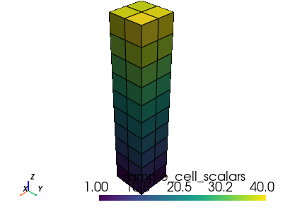
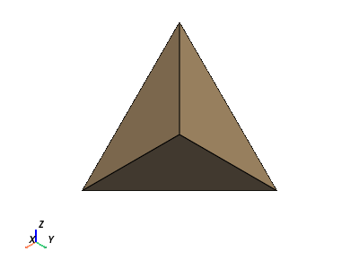
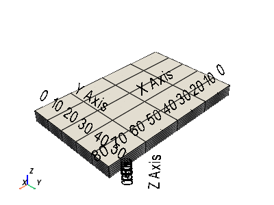
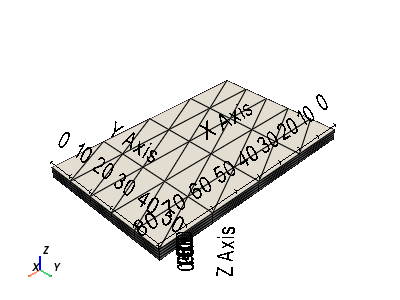

pyvista.UnstructuredGrid#
- class UnstructuredGrid(*args, deep=False, **kwargs)[source]#
Dataset used for arbitrary combinations of all possible cell types.
Can be initialized by the following:
Creating an empty grid
From a
vtk.vtkPolyDataorvtk.vtkStructuredGridobjectFrom cell, offset, and node arrays
From a file
- Parameters:
- args
various See below examples.
- deep
optional Whether to deep copy a vtkUnstructuredGrid object. Default is
False. Keyword only.
- args
Examples
>>> import pyvista >>> from pyvista import examples >>> import vtk
Create an empty grid
>>> grid = pyvista.UnstructuredGrid()
Copy a vtk.vtkUnstructuredGrid
>>> vtkgrid = vtk.vtkUnstructuredGrid() >>> grid = pyvista.UnstructuredGrid(vtkgrid)
From a filename.
>>> grid = pyvista.UnstructuredGrid(examples.hexbeamfile) >>> grid.plot(show_edges=True)
 From arrays (VTK >= 9). Here we create a single tetrahedron.
>>> cells = [4, 0, 1, 2, 3] >>> celltypes = [pyvista.CellType.TETRA] >>> points = [ ... [1.0, 1.0, 1.0], ... [1.0, -1.0, -1.0], ... [-1.0, 1.0, -1.0], ... [-1.0, -1.0, 1.0], ... ] >>> grid = pyvista.UnstructuredGrid(cells, celltypes, points) >>> grid.plot(show_edges=True)
 See the Creating an Unstructured Grid example for more details on creating unstructured grids within PyVista.
- cast_to_explicit_structured_grid()[source]#
Cast to an explicit structured grid.
Note
This feature is only available in
vtk>=9.0.0- Returns:
pyvista.ExplicitStructuredGridAn explicit structured grid.
- Raises:
TypeErrorIf the unstructured grid doesn’t have the
'BLOCK_I','BLOCK_J'and'BLOCK_K'cells arrays.
Examples
>>> from pyvista import examples >>> grid = examples.load_explicit_structured() >>> grid.plot(color='w', show_edges=True, show_bounds=True)
 >>> grid = grid.hide_cells(range(80, 120)) >>> grid.plot(color='w', show_edges=True, show_bounds=True)

>>> grid = grid.cast_to_unstructured_grid() >>> grid.plot(color='w', show_edges=True, show_bounds=True)
 >>> grid = grid.cast_to_explicit_structured_grid() >>> grid.plot(color='w', show_edges=True, show_bounds=True)

- property cell_connectivity: ndarray#
Return a the vtk cell connectivity as a numpy array.
This is effecively
UnstructuredGrid.cellswithout the padding.Note
This is only available in
vtk>=9.0.0.- Returns:
numpy.ndarrayConnectivity array.
Examples
Return the cell connectivity for the first two cells.
>>> import pyvista >>> from pyvista import examples >>> hex_beam = pyvista.read(examples.hexbeamfile) >>> hex_beam.cell_connectivity[:16] array([ 0, 2, 8, 7, 27, 36, 90, 81, 2, 1, 4, 8, 36, 18, 54, 90])
- property cells: ndarray#
Return a pointer to the cells as a numpy object.
Examples
Return the indices of the first two cells from the example hex beam. Note how the cells have “padding” indicating the number of points per cell.
>>> import pyvista >>> from pyvista import examples >>> hex_beam = pyvista.read(examples.hexbeamfile) >>> hex_beam.cells[:18] array([ 8, 0, 2, 8, 7, 27, 36, 90, 81, 8, 2, 1, 4, 8, 36, 18, 54, 90])
- property cells_dict: dict#
Return a dictionary that contains all cells mapped from cell types.
This function returns a
numpy.ndarrayfor each cell type in an ordered fashion. Note that this function only works with element types of fixed sizes.- Returns:
dictA dictionary mapping containing all cells of this unstructured grid. Structure: vtk_enum_type (int) -> cells (
numpy.ndarray).
Examples
Return the cells dictionary of the sample hex beam. Note how there is only one key/value pair as the hex beam example is composed of only all hexahedral cells, which is
CellType.HEXAHEDRON, which evaluates to 12.Also note how there is no padding for the cell array. This approach may be more helpful than the
cellsproperty when extracting cells.>>> import pyvista >>> from pyvista import examples >>> hex_beam = pyvista.read(examples.hexbeamfile) >>> hex_beam.cells_dict {12: array([[ 0, 2, 8, 7, 27, 36, 90, 81], [ 2, 1, 4, 8, 36, 18, 54, 90], [ 7, 8, 6, 5, 81, 90, 72, 63], ... [44, 26, 62, 98, 11, 10, 13, 17], [89, 98, 80, 71, 16, 17, 15, 14], [98, 62, 53, 80, 17, 13, 12, 15]])}
- property celltypes: ndarray#
Return the cell types array.
- Returns:
numpy.ndarrayArray of cell types. Some of the most popular cell types:
EMPTY_CELL = 0
VERTEX = 1
POLY_VERTEX = 2
LINE = 3
POLY_LINE = 4
TRIANGLE = 5
TRIANGLE_STRIP = 6
POLYGON = 7
PIXEL = 8
QUAD = 9
TETRA = 10
VOXEL = 11
HEXAHEDRON = 12
WEDGE = 13
PYRAMID = 14
PENTAGONAL_PRISM = 15
HEXAGONAL_PRISM = 16
QUADRATIC_EDGE = 21
QUADRATIC_TRIANGLE = 22
QUADRATIC_QUAD = 23
QUADRATIC_POLYGON = 36
QUADRATIC_TETRA = 24
QUADRATIC_HEXAHEDRON = 25
QUADRATIC_WEDGE = 26
QUADRATIC_PYRAMID = 27
BIQUADRATIC_QUAD = 28
TRIQUADRATIC_HEXAHEDRON = 29
QUADRATIC_LINEAR_QUAD = 30
QUADRATIC_LINEAR_WEDGE = 31
BIQUADRATIC_QUADRATIC_WEDGE = 32
BIQUADRATIC_QUADRATIC_HEXAHEDRON = 33
BIQUADRATIC_TRIANGLE = 34
See- https://vtk.org/doc/nightly/html/vtkCellType_8h_source.html
forallcelltypes.
Examples
This mesh contains only linear hexahedral cells, type
CellType.HEXAHEDRON, which evaluates to 12.>>> import pyvista >>> from pyvista import examples >>> hex_beam = pyvista.read(examples.hexbeamfile) >>> hex_beam.celltypes array([12, 12, 12, 12, 12, 12, 12, 12, 12, 12, 12, 12, 12, 12, 12, 12, 12, 12, 12, 12, 12, 12, 12, 12, 12, 12, 12, 12, 12, 12, 12, 12, 12, 12, 12, 12, 12, 12, 12, 12], dtype=uint8)
- linear_copy(deep=False)[source]#
Return a copy of the unstructured grid containing only linear cells.
Converts the following cell types to their linear equivalents.
QUADRATIC_TETRA --> TETRAQUADRATIC_PYRAMID --> PYRAMIDQUADRATIC_WEDGE --> WEDGEQUADRATIC_HEXAHEDRON --> HEXAHEDRON
- Parameters:
- Returns:
pyvista.UnstructuredGridUnstructuredGrid containing only linear cells when
deep=False.
- property offset: ndarray#
Return the cell locations array.
In VTK 9, this is the location of the start of each cell in
cell_connectivity, and in VTK < 9, this is the location of the start of each cell incells.- Returns:
numpy.ndarrayArray of cell offsets indicating the start of each cell.
Examples
Return the cell offset array within
vtk==9. Since this mesh is composed of all hexahedral cells, note how each cell starts at 8 greater than the prior cell.>>> import pyvista >>> from pyvista import examples >>> hex_beam = pyvista.read(examples.hexbeamfile) >>> hex_beam.offset array([ 0, 8, 16, 24, 32, 40, 48, 56, 64, 72, 80, 88, 96, 104, 112, 120, 128, 136, 144, 152, 160, 168, 176, 184, 192, 200, 208, 216, 224, 232, 240, 248, 256, 264, 272, 280, 288, 296, 304, 312, 320])